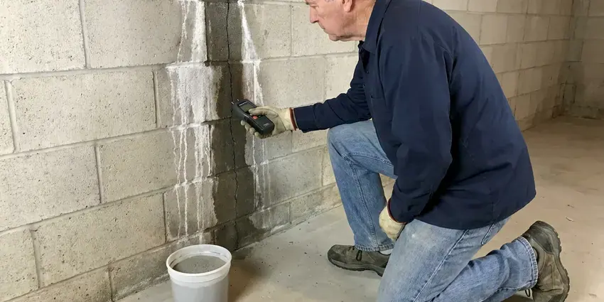

Emergency Plumber in Parma, OH
HRL Plumbing answers emergency calls in Parma, OH with a live dispatcher, not a voicemail box.
- No Surprise Overtime
- Nights and Weekends
- Certified for Gas Lines
- Leak Detection and Camera Gear

24/7 Plumbing Help in Parma, OH
Gas smell? Get outside and call the gas utility, then call us at (740) 449-7505.
24/7 Plumbing Repair in Parma, OH
HRL Plumbing sends licensed plumbers, not helpers, on night calls in Parma, OH. Most of a good emergency visit is diagnosis. Our tech checks the meter, isolates the failed branch and looks at the valve or fitting that let go, because a patch over the wrong problem just brings you a second call.
Work we handle every week:
- Cable machine and jetter drain clearing
- Slab leak isolation and repair
- Isolating and shutting off failed branches

Additional Plumbing Maintenance Services in Parma, OH
Our maintenance and specialty plumbing services in Parma, OH catch small problems before they become emergencies.


Customers
Why Choose HRL Plumbing for Emergency Plumber in Parma, OH?
Our plumbers have spent years on service calls, so they recognize a failed pressure regulator or a split PEX elbow quickly. It cuts the visit short. Nothing gets torn out until they can point to the leak on a meter or a camera screen.
- Lasting Repairs, We cut out the bad section rather than clamp it, so the fix holds after the emergency is over.
- Phone Shutoff Help, The dispatcher walks you to the shutoff before the plumber arrives.
- Local Pipe Knowledge, We know the pipe materials and sewer layouts common in Ohio homes, which speeds up diagnosis.
Citywide Coverage
Downtown condos and rural homes on wells both get emergency service from us around Parma. Wells come with their own issues. Our trucks carry pressure switches and tank fittings in addition to the standard city water parts.
Experienced Team
Techs on emergency duty carry a moisture meter and an acoustic listener along with their hand tools, a press tool and PEX crimpers. Hidden leaks get found with it. It also keeps drywall cuts small.
Safety-First Approach
Sewage backups get treated as a health hazard. Techs wear gloves and boots, contain the area and clean the floor around the drain once the line is clear. We tell you plainly when a restoration company should handle the rest.
Trusted Certified Parma Plumbing Services Professionals
At HRL Plumbing, we are proud to offer certified plumbing services throughout Parma, OH. Those papers on the wall mean something. Our plumbers hold recognized industry credentials, and they follow strict safety and quality rules on every repair, installation and maintenance call we run.
Call Us Now PHCC Plumbing Contractor Recognition
PHCC Plumbing Contractor Recognition Better Business Bureau (BBB) Accreditation
Better Business Bureau (BBB) Accreditation Angi Certified Pro
Angi Certified Pro ISO 9001 Quality Management Certification
ISO 9001 Quality Management CertificationEmergency Plumbing Jobs We Handle in Parma, OH
Emergency Plumbing for Rentals and Businesses in Parma
A burst line in a second-floor apartment floods the unit below fast. We respond after hours and on weekends to rentals, offices and restaurants, handling commercial water heaters, grease lines and multi-unit supply risers. Managers can set up a direct account. Dispatch then has your unit notes, shutoff locations and approval limits on file.

Gas Line Leak Repair in Parma
Rotten-egg smell near the range or a hiss by the water heater means leave the house now. Do not flip switches. From the yard, call 911 or the gas utility, then call us once they clear the scene, and our certified plumber will find the leak with a combustible gas detector, replace the bad section and pressure test the line to code before any appliance gets relit.
Burst Pipe Repair in Parma
A burst supply pipe can put several gallons a minute on the floor. Shut the main first. Our plumber finds the failed section, often by listening at the wall or reading a moisture meter before cutting any drywall, then removes the bad length and joins in a new section with proper fittings. We match what you have, copper with sweat or press fittings and PEX with crimp rings, so the repair ties in cleanly. A long heating season keeps water heaters and boilers working hard, so annual maintenance helps avoid midwinter breakdowns.
After-Hours Commercial Plumbing in Parma
Offices, shops and apartment buildings all lose money when the water stops in Parma. We run after-hours calls for burst branches, failed commercial water heaters and backflow assemblies that dump water. Grease line clogs are a regular one. Property managers can set up an account so dispatch already has the building notes, and that cuts minutes off a middle-of-the-night call.
Leaking Tank Water Heaters in Parma, OH
Hard water sediment cuts years off a tank, and the first leak often shows up at the bottom seam. A relief valve that drips after a hot shower is a separate problem, often high pressure or a failed expansion tank. We repair valves, thermocouples and connections, and when a tank has rusted through we can usually swap it the same day. Rheem and AO Smith are the brands we see most.
Emergency Plumbing Price Ranges in Parma, OH
Expect an after-hours dispatch fee of roughly $100 to $250 on top of the repair. A burst pipe fix commonly runs $250 to $800, and clearing a main line from the cleanout usually runs $250 to $600. Water heater replacements usually cost $1,500 to $3,500 installed, depending on fuel type and venting. A delay seldom saves anything.
Sump Pump Failure Repair in Parma, OH
Older cities with combined sewers can back up during big storms, so a backwater valve can protect a finished basement. A pump that hums but does not move water often has debris locked in the impeller. One that never kicks on points to the float. Our plumbers in Parma pull the pump, clear or replace it with a Zoeller or Wayne unit sized for your pit, and suggest a battery backup if the trouble keeps coming during outages. We test it with a bucket of water before leaving.

Emergency Water Heater Repair in Parma
No hot water at night is often a control problem, not a dead tank. On gas units, we check the thermocouple or flame sensor, the gas valve and the venting. Electric tanks get their elements and thermostats tested with a meter. Tankless units get a scale check. We carry common parts for Rheem, AO Smith, Bradford White and Rinnai, so many of these get fixed before you go back to bed.
An Emergency Plumber Close to You in Parma, OH
Searching for an emergency plumber near me in Parma at night tends to land you on a call center that resells your number. HRL Plumbing dispatches our own plumbers. You talk to the company doing the work.
Local also means we know which Parma neighborhoods have cleanouts buried in the front yard and which ones have meters in the alley. Small things like that save a lot of time. Finding shutoffs goes quicker.
HRL Plumbing at a Glance
- Licensed and insured plumbers serving Parma, OH
- 24/7 emergency service with same-day scheduling
- Clear written estimates, no hidden fees
- 4.9-star rated by 673+ Ohio customers
Parma Map
Parma Information
- Population
- 78,951
- Area codes
- 440/216/330
- Service area
- Parma and communities within 40 miles
- Nearby
- Cleveland, Lakewood, Cuyahoga Falls, Euclid
Minerals in the supply wear out valves, flex connectors and tank bottoms, so pinhole leaks and failed water heaters are a big share of our night calls in Parma, OH. Private wells serve many rural homes, and iron, sulfur and hardness are common issues that call for filtration or softening.
Expert Services
Call HRL Plumbing for honest, reliable plumbing from people who know the trade in Parma, OH.
Our Specialized Plumbing Services in Parma, OH
At HRL Plumbing, we handle the full list of plumbing services across Parma, OH. From leak detection to full system installs, our team works fast and charges fair prices on homes and commercial properties alike. Explore our core services below:


From Phone Call to Fixed in Parma, OH
We stop the water first and discuss the repair second. That order never changes.
Call (740) 449-7505
A live dispatcher helps you shut off water or gas and sends the nearest plumber.
Stop the Damage
The plumber stops the leak or backup first, then finds the cause and prices the fix.
Repair and Clean Up
The repair gets finished, tested and cleaned up, then go over the work with you.
Frequently Asked Questions About Emergency Plumber in Parma
Simple calls like a clogged toilet run about $150 to $350 during regular hours. Nights and weekends carry a dispatch fee. Bigger jobs, like a burst pipe or a sewer repair at night, can reach $500 to $2,000 or more depending on access and materials, and you get a written estimate first.
Nearly all of them. We work on Rheem, AO Smith, Bradford White, State, Rinnai and Navien. Our trucks stock the usual thermocouples, elements and valves, and same-day replacement is often possible when a tank has rusted through or the unit is past repair.
No. Most emergency repairs need no permit at all. Water heater swaps, gas repairs and some repipes do, so we file with your city or county and begin the work right away.
Most emergency calls get a plumber within 60 to 90 minutes in Parma, OH, depending on traffic and how many calls are open. Leaks that are still running get priority.
Same warranty, same paperwork. Parts also carry the manufacturer warranty, which runs anywhere from one year on a valve to six or more on a water heater tank. Working late is no reason to cut corners.
We do. HRL Plumbing clears commercial grease lines, repairs burst branches and gets commercial water heaters running again across Parma, working nights so you can open in the morning.
For most homes, we aim for one to two hours. During a hard freeze or a big storm, sewage backups and active leaks move to the front, and dispatch tells you honestly where you are in line.
We do. HRL Plumbing runs emergency calls for restaurants, offices and apartment buildings in Parma, OH. Commercial systems take larger gear, and our trucks carry jetters and commercial water heater parts to keep the closure as brief as possible.
What Our Customers Say About Our Plumbing Experts

Sofia M.
Two new toilets went in during one visit. The tech set them on new wax rings and swapped the old supply lines. He also noticed our bathroom faucet dripping and replaced the cartridge while he was there. No mess left behind.
Toilet Installation · Euclid, OH
Marcus H.
Grease from the fryer line kept clogging the kitchen drain at my diner. HRL Plumbing hydro jetted the line after closing, showed me the buildup on camera, and set us up on a quarterly cleaning so it does not catch us on a Friday again.
Drain Cleaning · Akron, OHJames P.
Our restaurant had a slow leak at the hand sink that was rotting the cabinet base. HRL Plumbing came in at six in the morning before prep, replaced the trap and both supply lines, and was packed up before my first cook clocked in.
Commercial Plumbing · Cleveland, OH
Carlos V.
Our house still had galvanized pipe, and upstairs the shower was a trickle. The crew repiped everything in PEX over three days and patched every drywall hole before they left. The pressure difference is night and day.
Repiping · Euclid, OHJessica T.
We were adding a gas range in a kitchen remodel and needed a new line run from the meter. The plumber pulled the permit, ran the pipe through the crawl space, and had it inspected and approved within the week.
Gas Line Repair · Cuyahoga Falls, OHLaura S.
Our 40 gallon tank started leaking from the bottom after thirteen years. The tech hauled the old one out, set a new unit with a fresh expansion tank, and had hot water running in about four hours. He took the old tank with him too.
Water Heater Replacement · Cuyahoga Falls, OH